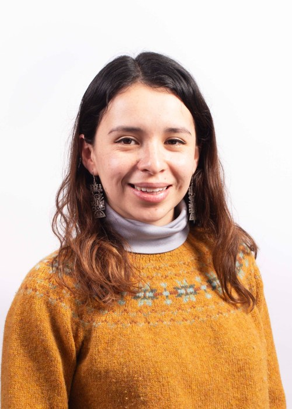

Sequential Monte Carlo
Particle filtering, local methods and scalable Bayesian computation for high-dimensional systems.
PhD researcher · Statistics · University of Edinburgh
I work on computational statistics, with a focus on Monte Carlo methods and particle filtering for high-dimensional state-space models.
My current research explores how to identify useful state-space partitions for local particle filters, and how sequential Bayesian methods can support forecasting in climate science. I am supervised by Víctor Elvira at the University of Edinburgh.

What I work on
Particle filtering, local methods and scalable Bayesian computation for high-dimensional systems.
Learning state-space structure from nonlinear transition dynamics to guide local inference.
Probabilistic forecasting and uncertainty quantification for climate tipping points.
Previously, I worked in data science and AI policy in Mexico. I am interested in research that connects careful mathematical work with meaningful applications.
Teaching & experience